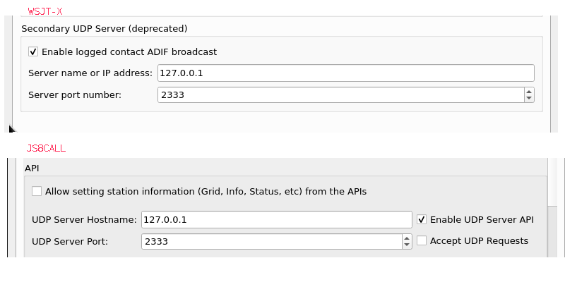
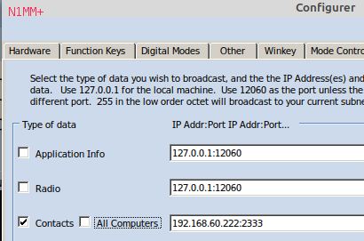
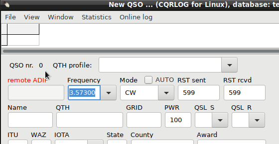

|
WARNING! Backup your data often! BACKUP your log directory at the end of EVERY session! All that you need to backup and store in a safe place is the log database directory located in the ~/.config/cqrlog/database folder, or you can enable the autobackup function in Preferences. This autobackup function creates an ADIF file with a backup of your log. /td> |
| [Menu] |

ADIF remote connection (former "N1MM+ remote logger") is just for copying logged qso infromation from other program like wsjt-x or js8call (or similars that support this kind of logging) to cqrlog.
There is no other finctionality than just transfer the logged data.
ADIF remote can read adif tags from UDP datagram as follows:
 Settings must be done at wsjt-x or js8call Settings/reporting. At least checking the checkbox. Port and address values can be defaults.  If N1MM is run in virtual machine or second computer the IP address of cqrlog computer must be used. Otherwise, when running under same Linux localhost addtess 127.0.0.1 can be used also with N1MM+
 When remote is selected you will see remote ADIF with red font. This will change when UDP frame is received. Case 1) (see list abowe) it turns to REMOTE ADIF Case 2) (see list abowe) it turns to rmt ADIF hdless Case 3) (see list abowe) it turns to rmt ADIF JS8CALL Case 4) (see list abowe) it turns to rmt ADIF N1MM+ Note: when case 3) frame is received ADIF remote can not receive any other type frames until remote is disabled and again enabled. This is because some versions of js8call send both json and headereless logging frames that would lead to double logging of qsos. No indication of logging can be seen unless user has set "cqrlog/preferences/NewQSO/Show recent qso records for last X days" active. If this is set, after pressing "OK" at companion program's logging window logged qso will appear to cqrlog's NewQSO recent qsos list. If QSO list window is open and "cqrlog/preferences/NewQSQ/Refresh data after save qso" is checked QSO list is also updated after QSO is logged.
ADIF remote can not be used at same time as fldigi or wsjt remotes. How ever if you allow ADIF logger support at wsjt-x and js8call settings and choose remote mode for ADIF from cqrlog you can keep both programs running at same time if your rigctld settings support that. See: setting_rigctld_for_all_programs, and log qsos from both programs to cqrlog without problems.
| [Menu] |